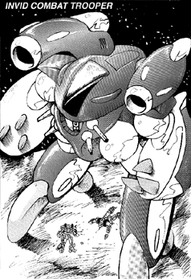

The following material is from
THE THIRD INVID
WAR, a fan supplement by
Dave Deitrich and
Chris
Meadows. Please feel free to use, copy, and distribute
it as you see fit. All we ask is that you give proper credit to us and do not
claim that it is your own work. Comments and suggestions are welcome.
THE INVID COMBAT TROOPER
BACKGROUND

The first new Invid mecha design to appear on Earth was the Combat
Trooper in 2043. The new trooper mecha seemed to suddenly appear all
over the Earth simultaneously, completely replacing the older Shock Trooper
design wherever it was found. Within a month reports of Shock Troopers had
dwindled to almost nothing, while the deadly new Combat Trooper became
the main front-line battle mecha for the Invid forces.
Stylistically, the Combat Trooper design is so close to the old Shock
Trooper mecha that the two could almost be mistaken for each other at a
quick glance. The Combat Trooper has the same long broad legs, large
forearm shields with three-fingered claws, and compact central body
design as the old Shock Trooper did. However, the similarities end
there. First off, the Combat Trooper stands 32.2 feet tall; almost
twice the size of the Shock Trooper and larger than a VAF-6 Alpha in
battloid mode! The twin plasma cannons on the back of the mecha are now
longer and more powerful than their predecessors. These cannons are
modular and can be replaced with other weapon systems for specialized
attacks. Two common weapon packages are a pair of heat cannons (like
the ones on the old Invid Command Unit) and a pair of heavy missile
launchers. In addition, the Combat Trooper has four pulse beam cannon,
similar to those of the Attack Scout. Two cannons are located on either
side of the central sensor eye. A Short-range missile launcher on the
back of the mecha between the plasma cannons completes the new
armaments. Invid Combat Troopers are dark green and grey in color.
As a ground combatant, the Invid Combat Trooper is far superior to the
old Shock Trooper mecha. It does have one major weakness, though; its
slow speed. The Combat Trooper's air and ground speeds are
approximately equal to those of the Shock Trooper, which means that REF
mecha are much faster and more agile than the Invid units. REF pilots
must still be careful, though; the Combat Trooper can do devastating
damage if any of its weapons ever manage to connect...
SCHEMATICS
 Click on the icon to the left to view the schematics of the Combat Trooper,
based on data collected by REF Intelligence.
Click on the icon to the left to view the schematics of the Combat Trooper,
based on data collected by REF Intelligence.
RPG STATS
Invid Name: "Torab"; REF Nickname: "Linebackers"
Vehicle Type: Mainline Combat Unit
Crew: One; Stage Two Invid Pilot
M.D.C. BY LOCATION
Claws (3 per Forearm) 25 each
Forearms (2) 200 each
Upper Arms (2) 100 each
Legs & Feet (2) 175 each
Main Engine Thruster (rear) 100
+ Heavy Plasma Cannons (2) 150 each
+ Heat Cannons (2) 120 each
+ Heavy Missile Launchers (2) 120 each
SRM Launcher (top) 100
& Pulse Beam Cannons (4) 20 each
* Sensor Eye 25
** Main Body 250
Pilot's Compartment 100
Notes:
- +
- The combat trooper will only have ONE pair of main weapons. Choose
one weapon type for each combat trooper. Heavy plasma cannons are
the most common type of weapon for the mecha.
- &
- The pulse beam cannons are slightly difficult to hit; -2 penalty.
- *
- The sensor eye is the most vulnerable place on the Invid's mecha
body. Destruction of the sensor eye will kill/destroy the mecha and
pilot (goes right through crew compartment). However, it is a small
target protected by surrounding shielding, thus, to hit it the
player/character must make a called shot and is at -3 to strike.
- **
- Depleting the M.D.C. of the main body will shut the mecha down
completely. Depleting the pilot compartment M.D.C. will blow the
Invid to pieces.
SPECIFICATIONS
- Flight:
- Stationary hover to 300 mph (482 kmph) maximum, with a ceiling
of 10,000 ft (3048 m).
- Running:
- 60 mph (96 kmph).
- Jumping:
- 30 ft (9.1 m) up or across.
- Height:
- 32.2 ft (9.9 m)
- Width:
- 25.5 ft (7.8 m)
- Length:
- 25.5 ft (7.8 m)
- Weight:
- 24 tons
- Cargo:
- Can carry up to twelve tons.
- Abilities:
- Pilot Mecha - 45%
- Recognize Human Machinery - 20%
- Prowl - 40%
- Detect Ambush - 30%
- Detect Concealment - 30%
- Track - 35%
WEAPON SYSTEMS
- HEAVY PLASMA CANNONS. These large plasma cannons are updated
versions of those originally found on the old Invid Shock Trooper.
However, they are much more powerful and have a far greater range than
the older models. One cannon is mounted over each shoulder, and both
cannons can fire independently or simultaneously. The plasma energy is
still released in Frisbee-like "annihilation discs," just like the older
model. The cannons can point up or down in a 90 degree arc.
- Primary Purpose: Assault
- Secondary Purpose: Anti-Aircraft
- Range: 6000 ft (1800 m)
- Damage: One single blast does 4D6 M.D., dual blasts do 8D6 M.D.
and simultaneous bursts do 2D4x10 M.D. A continuous stream, lasting
one full melee and directed at a single target, does 3D6x10
M.D.(!!) A strafing run (wild shooting) does 4D6 M.D. per hit.
- Rate of Fire: Four attacks per melee. Dual blasts and bursts
both count as ONE attack.
- Payload: Unlimited
- Bonuses to Strike: Protoculture targeting bonuses only.
- Note: the mouths of the plasma cannons glow white just before
they fire, just like their predecessors.
- (OPTIONAL) HEAT CANNONS. The Combat Trooper can also be mounted
with heat cannons, similar to those mounted on the pincer command unit.
Both cannons fire simultaneously, though if one cannon is destroyed
the other can still fire. Both cannons must fire at the same target.
Although fixed in a forward position, the rotating inner nozzles of
the cannons can adjust to about a 30 degree angle. To shoot in a
different direction or greater angle, the Combat Trooper must move
its entire body. A favorite tactic is to fly several hundred feet
(200 to 1000 ft) above the ground and blast opposing ground units.
- Primary Purpose: Assault
- Range: 4000 ft (1200 m)
- Damage: Single cannon blast does 3D6 M.D., and a dual cannon
blast does 6D6 M.D. A Long Blast (counts as two attacks) does 2D4x10
M.D. A concentrated blast (both cannons, focused at same target
all melee) does 3D6x10 M.D. A continuous-beam strafing run does
3D6 M.D. to everything it hits.
- Rate of Fire: Four attacks per melee. Dual blasts count as ONE
attack.
- Payload: Unlimited
- Bonuses to Strike: +1 to strike at all times, against any target.
Add in protoculture targeting bonuses for targets that use
protoculture.
- Note: the mouths of the heat cannons glow white just before they
fire, just like their predecessors.
- (OPTIONAL) LONG-RANGE MISSILE LAUNCHERS. A third optional weapons
package for the Combat trooper is a pair of long-range missile
launchers. Each launcher can hold 4 missiles, and all missiles can
be fired independently or in volleys. This weapons package is
typically only used in siege operations.
NOTE: There is only one type of Invid long-range missile. It is a
combination plasma/high explosive missile that seemed to be designed
with fortification destruction in mind. Although extremely powerful,
it is an UNGUIDED missile and gets no bonuses to strike.
- Primary Purpose: Heavy Assault
- Secondary Purpose: Destruction of fortifications
- Maximum Range: 200 miles (320 km)
- Speed: 1400 mph (2251 kmph)
- Damage: 3D6x10 M.D. per missile.
- Rate of Fire: One at a time, or in volleys of 2, 4, 6, or 8
(all).
- Payload: 4 missiles per launcher, 8 missiles total.
- M.D.C. of Missile: 20
- Bonuses to Strike: NO bonuses to strike.
- PULSE BEAM CANNONS. Four small Invid beam cannons are mounted in
the main body of the mecha, two on either side of the sensor eye. The
weapons can rotate to a maximum of 30 degrees in any direction. All
four cannons can fire in unison or independently of one another.
- Primary Purpose: Defense
- Secondary Purpose: Close-range assault
- Range: 3000 ft (900 m)
- Damage: One single blast (rare) does 2D6 M.D., dual blasts
(simultaneous shots, same target) do 4D6 M.D., and quad blasts
(all four cannons aimed at same target) do 6D6 M.D. A four-cannon
burst (12 blasts, all at same target) does 8D6 M.D.
- Rate of Fire: Four attacks per melee. Dual and quad blasts and
bursts count as ONE attack.
- Payload: Unlimited
- Bonuses to Strike: +1 to strike, plus protoculture targeting
bonuses.
- SRM MISSILE LAUNCHER. A small missile launcher is built into the
top of the mecha, in between the shoulders and plasma cannons. It is
normally recessed into the mecha, and pops up to fire.
- Primary Purpose: Assault
- Secondary Purpose: Anti-Aircraft, Anti-Cyclone
- Missile Type: Almost always Plasma SRMs.
- Range: 5 miles (8 km)
- Mega-Damage: 1D6x10 M.D.
- Rate of Fire: One at a time or in volleys of 2-5 missiles. Can
only fire a maximum of 5 missiles at a time!
- Payload: 20 missiles.
- Bonuses to Strike: +3 to strike (but no protoculture bonuses)
- HAND-TO-HAND COMBAT. Though a slow combatant, the Combat Trooper
can do lots of damage if it manages to hit!
- Attacks Per Melee: Four
- Hand to Hand Bonuses: No bonus to strike, +2 to parry, no bonus
to dodge on the ground, +1 to dodge when in flight, +1 to roll with a
punch, fall, or impact.
- Types of Attacks: Punch/Claw: 6D6 M.D. Crush with Hand:
2D6 M.D. per melee round. Body Block/Ram: 4D6 M.D., counts as two
attacks. Stomp: 4D6 M.D., target must be 15 ft (4.5 m) or smaller.